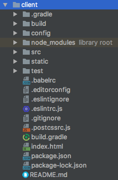
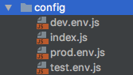
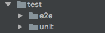
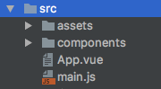
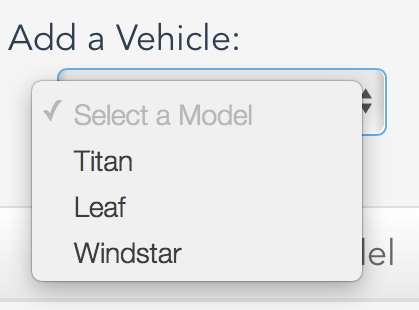
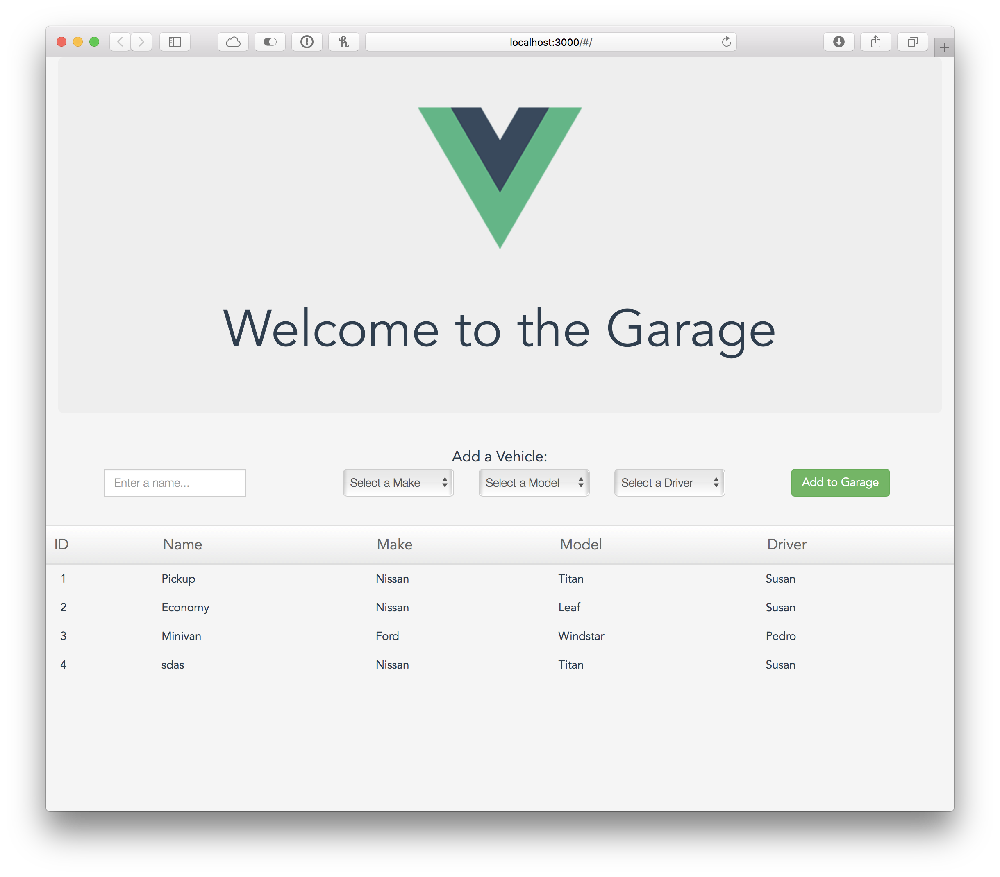

Building a Vue.js app with Grails
Learn how to add a Vue.js frontend to your application
Authors: Ben Rhine, Zachary Klein
Grails Version: 4
1 Training
Apache Grails Training
Apache Grails is now part of the Apache Software Foundation. The community-maintained training catalog is being migrated; in the meantime see the Learning page for current resources, recorded talks, and links to other community-supplied training material.
2 Getting Started
In this guide we will build a Grails application with a Vue.js app as the frontend, using the Vue profile. The example project will be the Garage application as seen in the React and Vaadin guides. You can refer to those guides for comparison with the Vue.js version.
Please note that this guide is not an introduction to Vue.js. You can refer to the official documentation, or see this introductory article.
2.1 What you will need
To complete this guide, you will need the following:
-
Some time on your hands
-
A decent text editor or IDE
-
JDK 11 or greater installed with
JAVA_HOMEconfigured appropriately
2.2 How to complete the guide
To get started do the following:
-
Download and unzip the source
or
-
Clone the Git repository:
git clone https://github.com/grails-guides/building-a-vue-app.git
The Grails guides repositories contain two folders:
-
initialInitial project. Often a simple Grails app with some additional code to give you a head-start. -
completeA completed example. It is the result of working through the steps presented by the guide and applying those changes to theinitialfolder.
To complete the guide, go to the initial folder
-
cdintograils-guides/building-a-vue-app/initial
and follow the instructions in the next sections.
You can go right to the completed example if you cd into grails-guides/building-a-vue-app/complete
|
3 Running the Application
The Vue profile generates a multi-project build, with server and client subprojects. The server project is a Grails application using the rest-api profile, while client is a Vue application generated with Vue-CLI’s webpack template. In order to run the entire project, you will need to start the server and client applications separately.
Change into the initial directory:
$ cd initial/To launch the Grails application, run the following command:
$ ./gradlew server:bootRunThe Grails application will be available at http://localhost:8080
To start the Vue.js app, open a second terminal session in the same directory, and run the following command:
$ ./gradlew client:startThe Vue.js app will be available at http://localhost:3000. Browse to that URL and you should see the default "Welcome" page.
4 Building the Server
Create the following four domain classes.
$ grails create-domain-class demo.Vehicle
$ grails create-domain-class demo.Driver
$ grails create-domain-class demo.Make
$ grails create-domain-class demo.ModelEdit the domain classes as follows:
link:../snippets/server/grails-app/domain/demo/Vehicle.groovy[role=include]link:../snippets/server/grails-app/domain/demo/Driver.groovy[role=include]link:../snippets/server/grails-app/domain/demo/Make.groovy[role=include]link:../snippets/server/grails-app/domain/demo/Model.groovy[role=include]Since we’ve added the @Resource annotation to our domain classes, Grails will generate RESTful URL mappings for each of them.
Let’s preload some data with the help of
GORM Data Services.
link:../snippets/server/grails-app/services/demo/MakeDataService.groovy[role=include]link:../snippets/server/grails-app/services/demo/ModelDataService.groovy[role=include]link:../snippets/server/grails-app/services/demo/DriverDataService.groovy[role=include]link:../snippets/server/grails-app/services/demo/VehicleDataService.groovy[role=include]link:../snippets/server/grails-app/init/demo/BootStrap.groovy[role=include]Restart the server project to load the test data in the default datasource.
If you wish to run the server app using the Grails wrapper ./grailsw run-app instead of the Gradle wrapper, make sure that
you are in your server directory when starting up the app.
|
4.1 Testing the API
While the Grails app is running, we can try out the RESTful API that Grails has generated for us, using cURL or another API tool.
Make a GET request to /vehicle to get a list of Vehicles:
$ curl -X "GET" "http://localhost:8080/vehicle"
HTTP/1.1 200
X-Application-Context: application:development
Content-Type: application/json;charset=UTF-8
Transfer-Encoding: chunked
Date: Fri, 06 Jan 2017 19:28:49 GMT
Connection: close
[{"id":1,"driver":{"id":1},"make":{"id":1},"model":{"id":1},"name":"Pickup"},
{"id":2,"driver":{"id":1},"make":{"id":1},"model":{"id":2},"name":"Economy"},
{"id":3,"driver":{"id":2},"make":{"id":2},"model":{"id":3},"name":"Minivan"}]Make a GET request to /driver/1 to get a particular Driver instance:
$ curl -X "GET" "http://localhost:8080/driver/1"
HTTP/1.1 200
X-Application-Context: application:development
Content-Type: application/json;charset=UTF-8
Transfer-Encoding: chunked
Date: Fri, 06 Jan 2017 22:10:33 GMT
Connection: close
{"id":1,"name":"Susan","vehicle":[{"id":2},{"id":1}]}Make a POST request to /driver to create a new Driver instance:
$ curl -X "POST" "http://localhost:8080/driver" \
-H "Content-Type: application/json; charset=utf-8" \
-d '{"name":"Edward"}'
HTTP/1.1 201
X-Application-Context: application:development
Location: http://localhost:8080/driver/3
Content-Type: application/json;charset=UTF-8
Transfer-Encoding: chunked
Date: Fri, 06 Jan 2017 21:55:59 GMT
Connection: close
{"id":3,"name":"Edward"}Make a PUT request to /vehicle to update a Vehicle instance:
$ curl -X "PUT" "http://localhost:8080/vehicle/1" \
-H "Content-Type: application/json; charset=utf-8" \
-d '{"name":"Truck","id":1}'
HTTP/1.1 200
X-Application-Context: application:development
Location: http://localhost:8080/vehicle/1
Content-Type: application/json;charset=UTF-8
Transfer-Encoding: chunked
Date: Fri, 06 Jan 2017 22:12:31 GMT
Connection: close
{"id":1,"driver":{"id":1},"make":{"id":1},"model":{"id":1},"name":"Truck"}4.2 Customizing the API
By default, the RESTful URLs generated by Grails provide only the IDs of associated objects.
$ curl -X "GET" "http://localhost:8080/vehicle"
HTTP/1.1 200
X-Application-Context: application:development
Content-Type: application/json;charset=UTF-8
Transfer-Encoding: chunked
Date: Fri, 06 Jan 2017 23:55:33 GMT
Connection: close
{"id":1,"name":"Pickup","make":{"id":1},"driver":{"id":1}}This is standard for many REST APIs, but we’ll need to get a bit more data from this endpoint for our Vue app in a moment. This is an excellent scenario for JSON Views. Let’s create a new JSON view to render our Vehicle list:
$ mkdir grails-app/views/vehicle/By convention, any JSON views in the corresponding view directory for a restful controller (like those generated by @Resource) will be used in lieu of the default JSON representation. Now we can customize our JSON output for each Vehicle by creating a new JSON template for Vehicle:
$ vim grails-app/views/vehicle/_vehicle.gsonEdit the file to include the following:
link:../snippets/server/grails-app/views/vehicle/_vehicle.gson[role=include]Now when we access our API, we’ll see the name and id of each make, model, and driver are included.
HTTP/1.1 200
X-Application-Context: application:development
Content-Type: application/json;charset=UTF-8
Transfer-Encoding: chunked
Date: Sat, 07 Jan 2017 00:24:18 GMT
Connection: close
{"id":1,"name":"Pickup","make":{"name":"Nissan","id":1},"model":{"name":"Titan","id":1},"driver":{"name":"Susan","id":1}}5 Building the Client
At this point our server project is done and we are ready to begin building our Vue.js client app. Let’s get an overview of the project structure provided by the Vue profile and the Vue-CLI.
5.1 Default Vue.js App layout
The Vue-CLI project includes all the configuration necessary to run, test and build the Vue.js project. It follows conventions that are recommended by the Vue.js community.

The build directory contains the webpack configuration files, including environment-specific config for dev, prod, and test environments.
The config directory contains non-build related configuration, including environment-specific config as described above. One config property of interest is SERVER_URL, which points to the URL of the Grails server application, and is set by default to http://localhost:8080. You can edit this to point to another server if needed.

While they serve a similar function, please remember that the Vue/webpack environment settings aren’t related directly to Grails environments - e.g., if you run/build your Grails project with a specific environment, it won’t automatically affect the environment in the client project.
|
The static directory contains static assets that should not be processed by webpack - you won’t be using it in this guide.
The test directory contains unit and integration (end-to-end) tests for the Vue.js app.

The src directory contains the actual source code for our Vue.js project. It includes subdirectories for components, assets (e.g., CSS files), and the default Vue-Router configuration. This is a typical project structure for a Vue.js app, however you can apply whatever directory structure suits your needs within the src directory. This is where we will be spending most of our time in the remainder of this guide.

5.2 Vue Components
Single File Components
We wil create several Vue components to consume/interact with our API. We will be using single-file components in this guide. Single-file components allow us to encapsulate the template (HTML), styling, and the component’s Vue instance (which handles the data and behavior of the component) in a single file. These files have an extension of .vue.
Single-file components require some additional processing in order to be rendered in a browser. The client project provided by the Vue profile is already configured to correctly compile single-file components.
The components are exported and can be imported into other components. They can also accept props, trigger and respond to events, and contain internal data (just like all Vue components). Refer to the Vue.js documentation to learn more about single-file components.
5.3 UI Header Component
Our first component will be a header bar. Create new file named AppHeader.vue under client/src/components, and edit as shown below:
link:../snippets/client/src/components/AppHeader.vue[role=include]The <template> contains the HTML template that will be rendered by the component. In the sample above, we are rendering a <div> tag to represent our UI’s main header, including a banner image and <h1> tag.
Every <template> must contain only one root-level element.
|
Within the <script> tag, we export a JavaScript object as a module. This object will be used as the instance definition for the Vue component, and is used to supply data & behavior for the component. In this case, our component is entirely presentational, so we don’t have much in this object. We will see more examples of the features available in this object, later in the guide.
The final section of the single-file-component is the <style> tags. Here you can specify component-specific CSS rules. These rules will be "scoped" to the component’s template and will not affect any other HTML elements.
Create a new file named VehicleFormHeader.vue under client/src/components/form (create the form directory if necessary), and edit it as shown below:
link:../snippets/client/src/components/form/VehicleFormHeader.vue[role=include]
By default, when you use a component in a template, the element name will be the component’s name, hyphenated. E.g, AppHeader will become <app-header>.
|
5.4 Select & Table Components
Select Component
We’ll need a generic <select> component that will allow the user to pick from available Make, Model, and Driver records, when creating a new vehicle.

Create the file FieldSelect.vue under client/src/components/form, and edit the contents as shown below:
link:../snippets/client/src/components/form/FieldSelect.vue[role=include]| 1 | Declare a prop with the name values - this prop will represent our list of objects to pick from, and will be passed into the components as an HTML attribute. E.g., <field-select values="[obj1,obj2,obj3]"/>. |
| 2 | The second prop is named field, and will represent the human-readable name of the field being selected (this is used as the default "no-selection" option). |
| 3 | The data() function returns an object which will become the initial data (or state) of the component. In this case, we only have one variable in our data - selected, which will store the current value of the select list. |
| 4 | The v-model directive sets up two-way binding between the "value" of the element and a variable in data. When the value changes, the model variable (selected) will be updated, and vice versa. |
| 5 | methods is an object containing arbitrary JavaScript functions, which can be called either within the template or from other methods in the component. |
| 6 | The updateValue method emits an event, which allows a parent component to respond to changes in this component. In this case, we are emitting the value of selected, which will be the user-selected option in the list. |
| 7 | We use the updateValue method as an event handler for the onChange event of our <select> element, using the @change attribute (other events are also supported - @click, @focus, etc). |
|
One-Way vs Two-Way Data-binding
Vue.js supports both one-way and two-way data-binding, and this component demonstrates both of those approaches. When an data variable is used in a template expression ( However, if an element uses the This flexibility means that you can develop in Vue.js using either approach, and mix and match when appropriate. In general, one-way data-binding leads to simpler, more predictable code. However, two-way binding is convenient and can simplify the creation of forms with many fields that correspond to the component’s data. Vue.js leaves the choice to you as the developer. |
Table Components
The next couple components will be used to display a table of vehicles in our UI. They are presentation components, so they won’t need any methods or event handling.
Create a new file named TableRow.vue under client/src/components/table/, and add the following content:
link:../snippets/client/src/components/table/TableRow.vue[role=include]| 1 | This component accepts a single prop of item, which holds the record to be rendered in the template. |
Create a new file named VehicleTable.vue under client/src/components/table/, and add the following content:
link:../snippets/client/src/components/table/VehicleTable.vue[role=include]| 1 | The v-for directive allows us to iterate over arrays, similar to a GSP <g:each> tag or ng-for directive in Angular. |
| 2 | Again, we are using the :item syntax to bind a vehicle object to the item prop of of <table-row> component. Note that we are also binding to a :key prop - similar to React, iteration of elements with v-for requires that each element have a unique key, which in our case is the vehicle.id. |
| 3 | In order to use our <table-row> component, we import it at the top of our <script> tags, and then specify it in a components object on our instance definition. |
|
Notice that the This of course assumes that you want to use the same name for the component as the component’s Notice that the |
5.5 Form Component
Our final component before we wire everything together will be a form to create new vehicles, using the drivers, makes and models we’ve pre-populated in our API. This is a slightly more complicated component than we’ve created up till now, but it builds off of the same features we’ve been seeing already.
Create a new file named VehicleForm.vue under client/src/components/form, and edit it as shown below:
link:../snippets/client/src/components/form/VehicleForm.vue[role=include]| 1 | This is the VehicleFormHeader component we created earlier. |
| 2 | Again, we are using the v-model directive to bind the value of an input to a variable in our data. |
| 3 | This is the FieldSelect component we created earlier - note that we are using the v-model directive for two-way binding (allowing the component to update our data), as well as using one-way data-binding to pass in a list of :values. |
| 4 | Since we wrote the FieldSelect component generically, we can reuse it for each of the select lists in our form. |
| 5 | Note that we’re not actually making the POST call to create a vehicle in this component - that task will be delegatd to the parent component, by emitting a submit event (as done here in the submit() method). |
| 6 | The vehicle prop represents the "new" vehicle object being created from the fields in this form. The makes, models, and drivers props will be the lists of records used to populate the select components. |
Next Step
At this point, we have all the components we need to build a form and display our vehicles in a table. We still need to implement our API integration, and then put all these pieces together into a working application.
5.6 Vehicle Display
Create a new file named Garage.vue under client/src/components/, and edit it as shown below:
<template>
<div id="garage">
<app-header></app-header>
<vehicle-form v-model="vehicle"
:makes="makes"
:models="models"
:drivers="drivers"
@submit="submitNewVehicle()">
</vehicle-form>
<vehicle-table :vehicles="vehicles"></vehicle-table>
</div>
</template>
<script>
import AppHeader from './AppHeader'
import VehicleForm from './form/VehicleForm'
import VehicleTable from './table/VehicleTable'
export default {
components: {
AppHeader,
VehicleForm,
VehicleTable
},
data: function () {
return {
vehicles: [],
vehicle: {name: '', make: null, model: null, driver: null},
models: [],
makes: [],
drivers: [],
serverURL: process.env.SERVER_URL
}
},
created () {
this.fetchData()
},
methods: {
fetchData: async function () {
try {
await Promise.all([
this.fetchVehicles(),
this.fetchModels(),
this.fetchModels(),
this.fetchMakes(),
this.fetchDrivers()
])
} catch (error) {
console.log(error)
}
},
fetchVehicles: function () {
fetch(`${this.serverURL}/vehicle`)
.then(r => r.json())
.then(json => { this.vehicles = json })
.catch(error => console.error('Error retrieving vehicles: ' + error))
},
fetchModels: function () {
fetch(`${this.serverURL}/model`)
.then(r => r.json())
.then(json => { this.models = json })
.catch(error => console.error('Error retrieving models: ' + error))
},
fetchMakes: function () {
fetch(`${this.serverURL}/make`)
.then(r => r.json())
.then(json => { this.makes = json })
.catch(error => console.error('Error retrieving makes: ' + error))
},
fetchDrivers: function () {
fetch(`${this.serverURL}/driver`)
.then(r => r.json())
.then(json => { this.drivers = json })
.catch(error => console.error('Error retrieving drivers: ' + error))
},
submitNewVehicle: function () {
const vehicle = this.vehicle
fetch(`${this.serverURL}/vehicle`, {
method: 'POST',
headers: {'Content-Type': 'application/json'},
body: JSON.stringify(vehicle)
}).then(r => r.json())
.then(json => {
this.vehicles.push(json)
this.vehicle = {name: '', make: null, model: null, driver: null}
})
.catch(ex => console.error('Unable to save vehicle', ex))
}
}
</script>
<!-- Per Component Custom CSS Rules -->
<style>
#garage {
font-family: 'Avenir', Helvetica, Arial, sans-serif;
text-align: center;
color: #2c3e50;
}
</style>Breaking it down
Because this is a large component, we’ll go through it in sections.
link:../snippets/client/src/components/Garage.vue[role=include]| 1 | We’ve set the submitNewVehicle() method (which we’ll see shortly) as an event handler for the submit event (which we emitted in the VehicleForm.submit() function). |
| 2 | We bind our vehicles data variable to the vehicles prop of the VehicleTable component. |
link:../snippets/client/src/components/Garage.vue[role=include]| 1 | Importing our components for use in the template |
| 2 | Our data() function returns the initial state for the component. It is important that we initialize all the variables we intend to use in this data object, because if we add a variable afterwards it will not be treated as a reactive property (i.e, changes to the variable will not trigger an update to the component). |
| 3 | SERVER_URL is a config variable set in client/config/dev.env.js (there are equivalent config files for test and prod environments). You can change the base URL for the API calls below by changing the SERVER_URL variable. |
link:../snippets/client/src/components/Garage.vue[role=include]| 1 | created is one of several lifecycle hooks, which are methods that are called at specific points in a component lifecycle (other methods available include beforeUpdate, updated, mounted, etc. You can learn about the available lifecycle hooks from the Vue.js documentation |
| 2 | The fetchData method is where we call several other methods to retrieve data from the API. Since these API calls are independent and don’t need to be run synchronously, we have added the async keyword to this function. |
| 3 | Within a try/catch block, we "chain" our multiple API calls using the Promise API. Since we are not returning anything from these methods, we don’t need to use the await keyword that is often used in an async function. |
link:../snippets/client/src/components/Garage.vue[role=include]| 1 | The next few methods will make the respective API calls referenced in the previous code snippet. We are using the fetch API to make GET calls to our resource endpoints, parse the JSON, and store the data in the appropriate data variable. |
link:../snippets/client/src/components/Garage.vue[role=include]| 1 | Because we stored the vehicle object (used by the VehicleForm component) in our top-level component’s data, making a POST request to save the vehicle instance is trivial - we simply grab the variable from our data (e.g., this.vehicle), convert it to a JSON string, and make a POST request using fetch. |
| 2 | The POST request will return the newly created vehicle instance, which we simply push onto our data.vehicles array. |
| 3 | After adding the new vehicle to the list, we "reset" the form by setting data.vehicle to an empty object (remembering to initialize the needed fields with empty/null values) |
link:../snippets/client/src/components/Garage.vue[role=include]| 1 | A few styles are included here to pretty up the layout of the app - feel free to use whatever styles you’d like. Note that these styles are constrained (or scoped) to the component’s own template. |
5.7 Routing
If you were to run the client app now (or reload if you’ve kept the client:start task running while you followed through the guide), you would notice that the default home page hasn’t changed. This is because Vue Router - the official routing library for Vue.js apps - is configured to display the Welcome component at the index route. Fortunately, this is a simple change.
Edit the file client/src/router/index.js as shown below:
link:../snippets/client/src/router/index.js[role=include]| 1 | Replace the import and usages of the Welcome component with our Garage component, for the index / route. |
Run the Application
Run the client project with ./gradlew client:start, and browse to http://localhost:3000. You should see our new Vue app, and be able to interact with the Grails REST API. Congratulations, you’ve built a Vue.js app with Grails!

6 Next Steps
There’s plenty of opportunities to expand the scope of this application. Here are a few ideas for improvements you can make on your own:
-
Improve the form (or create new form components) for adding Makes, Models, and Drivers.
-
Add support for editing existing Vehicles, perhaps using a modal dialog for an edit form.
-
Currently the Makes & Model domain classes are independent. Add an appropriate GORM association between Make & Model, and change the select lists to only display Models for the currently select Make. You will want to make use of the JavaScript
Array.filtermethod.
7 Do you need help with Grails?
Help with Apache Grails
Apache Grails is supported by an active community of contributors and the Apache Software Foundation. If you need help working through a guide, want to discuss the framework, or have run into something that looks like a bug, the channels below are the right place to start.
-
Slack - real-time conversation with the Apache Grails community.
-
dev@grails.apache.org">Developer mailing list - design discussions and contributor coordination.
-
users@grails.apache.org">Users mailing list - end-user questions and answers.
-
Issue tracker on GitHub - file a bug or feature request against the framework.
For Grails plugins, see the matching project on the apache org or the plugin’s own GitHub repository.